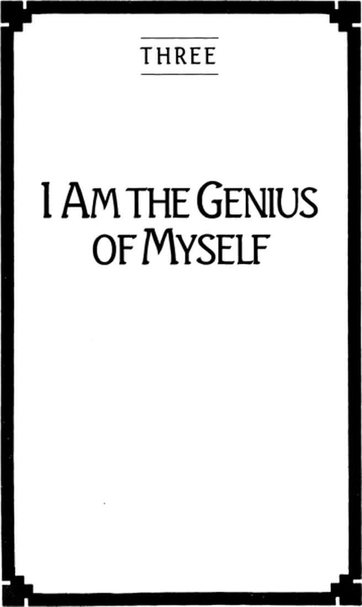

Chapter Three: I Am the Genius of Myself

51
I AM THE GENIUS of myself, the poietes who composes the sentences I speak and the actions I take. It is I, not the mind, that thinks. It is I, not the will, that acts. It is I, not the nervous system, that feels.
When I speak as the genius I am, I speak these words for the first time. To repeat words is to speak them as though another were saying them, in which case I am not saying them. To be the genius of my speech is to be the origin of my words, to say them for the first, and last, time. Even to repeat my own words is to say them as though I were another person in another time and place.
When I forsake my genius and speak to you as though I were another, I also speak to you as someone you are not and somewhere you are not. I address you as audience, and do not expect you to respond as the genius you are.
Hamlet was not reading when he said he was reading words; neither do we act when we perform actions, nor think when we entertain thoughts. A dog taught the action of shaking hands does not shake your hand. A robot can say words but cannot say them to you.
Since being your own genius is dramatic, it has all the paradox of infinite play: You can have what you have only by releasing it to others. The sounds of the words you speak may lie on your own lips, but if you do not relinquish them entirely to a listener they never become words, and you say nothing at all. The words die with the sound. Spoken to me, your words become mine to do with as I please. As the genius of your words, you lose all authority over them. So too with thoughts. However you consider them your own, you cannot think the thoughts themselves, but only what they are about. You cannot think thoughts any more than you can act actions. If you do not truly speak the words that reside entirely in their own sound, neither can you think that which remains thought or can be translated back into thought. In thinking you cast thoughts beyond themselves, surrendering them to that which they cannot be.
The paradox of genius exposes us directly to the dynamic of open reciprocity, for if you are the genius of what you say to me, I am the genius of what I hear you say. What you say originally I can hear only originally. As you surrender the sound on your lips, I surrender the sound in my ear. Each of us has relinquished to the other what has been relinquished to the other.
This does not mean that speech has come to nothing. On the contrary, it has become speech that invites speech. When the genius of speech is abandoned, words are said not originally but repetitively. To repeat words, even our own, is to contain them in their own sound. Veiled speech is that spoken as though we have forgotten we are its originators.
To speak, or act, or think originally is to erase the boundary of the self. It is to leave behind the territorial personality. A genius does not have a mind full of thoughts but is the thinker of thoughts, and is the center of a field of vision. It is a field of vision, however, that is recognized as a field of vision only when we see that it includes within itself the original centers of other fields of vision.
This does not mean that I can see what you see. On the contrary, it is because I cannot see what you see that I can see at all. The discovery that you are the unrepeatable center of your own vision is simultaneous with the discovery that I am the center of my own.
52
As the geniuses we are, we do not look but see.
To look at something is to look at it within its limitations. I look at what is marked off, at what stands apart from other things. But things do not have their own limitations. Nothing limits itself. The sea gulls circling on the invisible currents, the cat on my desk, the siren of a distant ambulance are not somehow distinct from the environment; they are the environment. To look at them I must look for what I take them to be. I was not looking at the sea gulls as though it was the sea gulls who happened to be there—I was looking for something to make this example. I might have seen them as a sign that land is not far, or that the sea is not far; I could have been looking for a form to reproduce on a canvas or in a poem. To look at is to look for. It is to bring the limitations with us. “Nature has no outline. Imagination has” (Blake).
If to look is to look at what is contained within its limitations, to see is to see the limitations themselves. Each new school of painting is new not because it now contains subject matter ignored in earlier work, but because it sees the limitations previous artists imposed on their subject matter but could not see themselves. The earlier artists worked within the outlines they imagined; the later reworked their imaginations.
To look is a territorial activity. It is to observe one thing after another within a bounded space—as though in time it can all be seen. Academic fields are such territories. Sometimes everything in a field finally does get looked at and defined—that is, placed in its proper location. Mechanics and rhetoric are such fields. Physics may prove to be. Biological mysteries fall away at an astonishing rate. It becomes increasingly difficult to find something new to look at.
When we pass from looking to seeing, we do not therefore lose our sight of the objects observed. Seeing, in fact, does not disturb our looking at all. It rather places us in that territory as its genius, aware that our imagination does not create within its outlines but creates the outlines themselves. The physicist who sees speaks physics with us, inviting us to see that the things we thought were there are not things at all. By learning new limitations from such a person, we learn not only what to look for with them but also how to see the way we use limitations. A physics so taught becomes poiesis.
53
To be the genius of myself is not to bring myself into being. As the origin of myself I am not also the cause of myself, as though I were the product of my own action. But then neither am I the product of any other action. My parents may have wanted a child, but they could not have wanted me.
I am both the outcome of my past and the transformation of my past. To be related to the past as its outcome is to stand in causal continuity with it. Such a relation can be accounted for in scientific explanation. I can be said to be the result of precise genetic influence. The date and place of my birth are matters of causal necessity; I had no part in deciding either. Neither could anyone else have chosen them. My birth, when understood in terms of causal continuity, marks no absolute beginning. It marks nothing at all except an arbitrary point in an unbroken process. Causally speaking, there is nothing new here, only the kinds of change that conform to the known laws of nature.
Speaking in purely causal terms, I cannot say I was born; I should say rather that I have emerged as a phase in the process of reproduction. A reproduction is a repetition, a recurrence of that which has been. Birth, on the other hand, in causal terms, is all discontinuity. It has its beginning in itself, and can be caused by nothing. It makes no sense to say, “I was reproduced on this date and in this place.” To say “I was born” is to speak of myself as having an uncaused point of departure within the realm of the continuous, an absolute beginning not comprehensible to the explanatory intelligence.
As such a phenomenon birth repeats nothing; it is not the outcome of the past but the recasting of a drama already under way. A birth is an event in the ongoing history of a family, even the history of a culture. The radical originality of a birth announces itself in the way it brings the dramatic into conflict with the theatrical in cultural or family history.
Theatrically, my birth is an event of plotted repetition. I am born as another member of my family and my culture. Who I am is a question already answered by the content and character of a tradition. Dramatically, my birth is the rupture of that repetitive sequence, an event certain to change what the past has meant. In this case the character of a tradition is determined by who I am. Dramatically speaking, every birth is the birth of genius.
The drama under way at the time of my birth is moved forward to new possibilities by the appearance of a new genius within it. It is a drama, however, already peopled by finite players attempting to forget, playing for keeps. If I am born into, and add to, the culture of a family, I am also a product and a citizen of its politics. I first experience the conflict between the theatrical and the dramatic in the felt pressure to take up one of the roles prepared for me: eldest son, favorite daughter, heir to the family’s honor, avenger of its losses.
Each of these roles comes, of course, with a script, one whose lines a person might easily spend a lifetime repeating, while intentionally forgetting, or repressing, the fact that it is but a learned script. Such a person “is obliged to repeat the repressed material as a contemporary experience instead of, as the physician would prefer to see, remembering it as something belonging to the past” (Freud). It is the genius in us who knows that the past is most definitely past, and therefore not forever sealed but forever open to creative reinterpretation.
54
Not allowing the past to be past may be the primary source for the seriousness of finite players. Inasmuch as finite play always has its audience, it is the audience to whom the finite player intends to be known as winner. The finite player, in other words, must not only have an audience but must have an audience to convince.
Just as the titles of winners are worthless unless they are visible to others, there is a kind of antititle that attaches to invisibility. To the degree that we are invisible we have a past that has condemned us to oblivion. It is as though we have somehow been overlooked, even forgotten, by our chosen audience. If it is the winners who are presently visible, it is the losers who are invisibly past.
As we enter into finite play—not playfully, but seriously—we come before an audience conscious that we bear the antititles of invisibility. We feel the need, therefore, to prove to them that we are not what we think they think we are or, more precisely, that we were not who we think the audience thinks we were.
As with all finite play, an acute contradiction quickly develops at the heart of this attempt. As finite players we will not enter the game with sufficient desire to win unless we are ourselves convinced by the very audience we intend to convince. That is, unless we believe we actually are the losers the audience sees us to be, we will not have the necessary desire to win. The more negatively we assess ourselves, the more we strive to reverse the negative judgment of others. The outcome brings the contradiction to perfection: by proving to the audience they were wrong, we prove to ourselves the audience was right.
The more we are recognized as winners, the more we know ourselves to be losers. That is why it is rare for the winners of highly coveted and publicized prizes to settle for their titles and retire. Winners, especially celebrated winners, must prove repeatedly they are winners. The script must be played over and over again. Titles must be defended by new contests. No one is ever wealthy enough, honored enough, applauded enough. On the contrary, the visibility of our victories only tightens the grip of the failures in our invisible past.
So crucial is this power of the past to finite play that we must find ways of remembering that we have been forgotten to sustain our interest in the struggle. There is a humiliating memory at the bottom of all serious conflicts. “Remember the Alamo!” “Remember the Maine!” “Remember Pearl Harbor!” These are the cries that carried Americans into several wars. Having once been insulted by Athens, the great Persian Emperor Darius renewed his appetite for war by having a page follow him about to whisper in his ear, “Sire, remember the Athenians.”
Indeed, it is only by remembering what we have forgotten that we can enter into competition with sufficient intensity to be able to forget we have forgotten the character of all play: Whoever must play cannot play.
Whenever we act as the genius of ourselves, it will be in the spirit of allowing the past to be past. It is the genius in us who is capable of ridding us of resentment by exercising what Nietzsche called the “faculty of oblivion,” not as a way of denying the past but as a way of reshaping it through our own originality. Then we forget that we have been forgotten by an audience, and remember that we have forgotten our freedom to play.
55
If in the culture into which we are born there are always persons who will urge us to theatricalize our lives by supplying us with a repeatable past, there will also be persons (possibly the same ones) in whose presence we learn to prepare ourselves for surprise. It is in the presence of such persons that we first recognize ourselves as the geniuses we are.
These persons do not give us our genius or produce it in us. In no way is the source of genius external to itself; never is a child moved to genius. Genius arises with touch. Touch is a characteristically paradoxical phenomenon of infinite play.
I am not touched by an other when the distance between us is reduced to zero. I am touched only if I respond from my own center—that is, spontaneously, originally. But you do not touch me except from your own center, out of your own genius. Touching is always reciprocal. You cannot touch me unless I touch you in response.
The opposite of touching is moving. You move me by pressing me from without toward a place you have already foreseen and perhaps prepared. It is a staged action that succeeds only if in moving me you remain unmoved yourself. I can be moved to tears by skilled performances and heart-rending newspaper accounts, or moved to passion by political manifestos and narratives of heroic achievement—but in each case I am moved according to a formula or design to which the actor or agent is immune. When actors bring themselves to tears by their performance, and not as their performance, they have failed their craft; they have become theatrically inept.
This means that we can be moved only by persons who are not what they are; we can be moved only when we are not who we are, but are what we cannot be.
When I am touched, I am touched only as the person I am behind all the theatrical masks, but at the same time I am changed from within—and whoever touches me is touched as well. We do not touch by design. Indeed, all designs are shattered by touching. Whoever touches and whoever is touched cannot but be surprised. (The unpredictability of this phenomenon is reflected in our reference to the insane as “touched.”)
We can be moved only by way of our veils. We are touched through our veils.
56
The character of touching can be seen quite clearly in the way infinite players understand both healing and sexuality.
If to be touched is to respond from one’s center, it is also to respond as a whole person. To be whole is to be hale, or healthy. In sum, whoever is touched is healed.
The finite player’s interest is not in being healed, or made whole, but in being cured, or made functional. Healing restores me to play, curing restores me to competition in one or another game.
Physicians who cure must abstract persons into functions. They treat the illness, not the person. And persons willfully present themselves as functions. Indeed, what sustains the enormous size and cost of the curing professions is the widespread desire to see oneself as a function, or a collection of functions. To be ill is to be dysfunctional; to be dysfunctional is to be unable to compete in one’s preferred contests. It is a kind of death, an inability to acquire titles. The ill become invisible. Illness always has the smell of death about it: Either it may lead to death, or it leads to the death of a person as competitor. The dread of illness is the dread of losing.
One is never ill in general. One is always ill with relation to some bounded activity. It is not cancer that makes me ill. It is because I cannot work, or run, or swallow that I am ill with cancer. The loss of function, the obstruction of an activity, cannot in itself destroy my health. I am too heavy to fly by flapping my arms, but I do not for that reason complain of being sick with weight. However, if I desired to be a fashion model, a dancer, or a jockey, I would consider excessive weight to be a kind of disease and would be likely to consult a doctor, a nutritionist, or another specialist to be cured of it.
When I am healed I am restored to my center in a way that my freedom as a person is not compromised by my loss of functions. This means that the illness need not be eliminated before I can be healed. I am not free to the degree that I can overcome my infirmities, but only to the degree that I can put my infirmities into play. I am cured of my illness; I am healed with my illness.
Healing, of course, has all the reciprocity of touching. Just as I cannot touch myself, I cannot heal myself. But healing requires no specialists, only those who can come to us out of their own center, and who are prepared to be healed themselves.
57
Sexuality for the infinite player is entirely a matter of touch. One cannot touch without touching sexually.
Because sexuality is a drama of origins, it gives full expression to the genius you are and to the genius of others who participate in that drama. This throws a high challenge before the political ideologue. Aware that genuine sexual expression is at least as dangerous to society as genuine artistic expression, the sexual metaphysician can appeal to at least two powerful solutions. One is to treat sexuality as a process of reproduction; another is to place it in the area of feeling and behavior.
Although reproduction is a process that operates by way of our bodies, it nonetheless operates autonomously. Like every other natural process it is a phenomenon of causal continuity, having no inherent beginning or end. Therefore we cannot be said to initiate the process by any act of our own. We can only be carried along by it, inasmuch as conception occurs only when all the necessary conditions have been met by the parenting couple. No one conceives a child; a child is conceived in the conjunction of sperm and ovum. The mother does not give birth to a child; the mother is where the birth occurs.
The metaphysics of sexuality, applying to this solution, can therefore draw a boundary line around sexual activity that leaves the genius of parenting altogether outside it. Thus the familiar view of some Christian theologians who say that the only end of the sexual act is procreation. But this metaphysics, committed as it is to the continuity of the process, also leaves the genius of the child entirely outside it. Thus the familiar view of theologians who say that the end of childbirth is to provide citizens for the kingdom of God. Metaphysically understood, sexuality has nothing to do with our existence as persons, for it views persons as expressions of sexuality, and not sexuality as the expression of persons.
The second way of veiling genuine sexuality is to regard it as a feeling or as a kind of behavior. In either case it has the character of something under observation. Even if it is our own sexuality we are concerned with, we can still look on it from without, making an assessment of it as though it were of another person. We ask ourselves and each other whether certain behavior is acceptable or desirable; we are puzzled over the proper response to sexual feelings—ours or another’s. Sexuality can in this way be dealt with as a societal phenomenon, regulated and managed according to the prevailing ideology. Sexual rebels, violators of the sexual taboos, do not weaken this ideology but affirm it as the rules of finite play.
It is convenient to think that sexual misfits violate rules. The matter is subtler by far. They are not concerned to oppose the rules themselves but to engage in competitive struggle by way of those rules. Sexual attractiveness, or sexiness, is effective only to the degree that someone is offended by it. Pornography is exciting only so far as it reveals something forbidden, something otherwise unseeable. Thus the mandatory hostility in it, the quality of shock and violence.
Because sexuality is so rich in the mystery of origin, it becomes a region of human action deeply shaped by resentment, where participants play out a manifold strategy of hostile encounters. The players in finite sexuality not only require the offended resistance of those who refuse to join them in their play, they require the resistance of those who do join them.
Sexual plotting on the part of one player is in fact stimulated by disinterest or fear or loathing on the part of the other. A Master Player of finite sexuality chooses not to take these attitudes as a way of refusing the sexual game, but takes them to be part of the game. Thus my indifference or revulsion to your sexuality becomes in your masterful play a sexual indifference, a sexual revulsion. Suddenly I am no longer indifferent to your game, but indifferent to you within your game, and have ipso facto made myself your opponent. This is the plot of the classical pulp novel and of Hollywood romance: indifferent girl won by ardent boy.
The profound seriousness of such sexual play is seen in the unique nature of the prize that goes to the winner. What one wants in the sexual contest is not just to have defeated the other, but to have the defeated other. Sexuality is the only finite game in which the winner’s prize is the defeated opponent.
Sexual titles, like all other titles, have appropriately conspicuous emblems. However, only in sexuality do persons themselves become property. In slavery or wage labor what we possess is not the persons of the slaves or the workers, but the products of their labors. In this case, to use Marx’s phrase, persons are abstracted from their labor. But in sexuality persons are abstracted from themselves. The seduced opponent is so displayed as to draw public attention to the seducer’s triumph. In the complex plotting of sexual encounter it is by no means uncommon for the partners to have played a double game in which each is winner and loser, and each is an emblem for the other’s seductive power.
A society shows its mastery in the management of sexuality not when it sets out unambiguous standards for sexual behavior or prescribed attitudes toward sexual feelings, but when it institutionalizes the emblematic display of sexual conquest. These institutions can be as varied as burning widows alive on the funeral pyres of their husbands or requiring the high visibility of a spouse at an elected official’s inauguration.
Finite sexuality is a form of theater in which the distance between persons is regularly reduced to zero but in which neither touches the other.
58
Insofar as sexuality is a drama of origin it is original to society and not derivative of it. It is therefore somewhat misleading to describe society as a regulator of finite sexual play. It is more the case that finite sexuality shapes society than is shaped by it. Only to a limited extent do we take on the sexual roles assigned us by society. Much more frequently we enter into societal arrangements by way of sexual roles. (For example, we are more likely to refer to the king as the father of the country than we are to refer to the father as king of the family.) While society does serve a regulatory function, it is probably more correctly understood as sexuality making use of society to regulate itself.
This means that society plays little or no role in either causing or preventing sexual tensions. On the contrary, society absorbs sexual tensions into all of its structures. It becomes the larger theater for playing out the patterns of resentment learned in the family. Society is where we prove to parents qua audience that we are not what we thought they thought we were. Since the emphasis in this relationship is not on what our parents thought of us but on what we thought they thought, they become an audience that easily survives their physical absence or death. Moreover, for the same reason they become an audience whose definitive approval we can never win.
To use Freud’s famous phrase, the civilized are, therefore, the discontent. We do not become losers in civilization but become civilized as losers. The collective result of this ineradicable sense of failure is that civilizations take on the spirit of resentment. Acutely sensitive to an imagined audience, they are easily offended by other civilizations. Indeed, even the most powerful societies can be embarrassed by the weakest: the Soviet Union by Afghanistan, Great Britain by Argentina, the United States by Grenada.
This is also why the only true revolutionary act is not the overthrow of the father by the son—which only reinforces the existing patterns of resentment—but the restoration of genius to sexuality. It is by no means an accident that the only successful attempt of the American citizenry to force the ending of a foreign war occurred simultaneously with a wide revision in sexual attitudes. The civilization quickly recovered from this threat, however, by tempting these revolutionaries into a new sexual politics, one of societal standoff, where sexual genius is confused with such struggles as the passage of the Equal Rights Amendment and the election of women to national office.
There is one other way in which society is shaped by the tensions of finite sexuality: in its orientation toward property. Since sexuality is the only finite game in which the winner’s prize is the loser, the most desirable form of property is the publicly acknowledged possession of another’s person, a relationship to which the possessed must of course freely consent. All other forms of property are considerably less desirable, even when they are vast in quantity. The true value of my property, in fact, varies not with its monetary worth but with its effectiveness in winning for me the declaration that I am the Master Player in our game with each other.
The most serious struggles are those for sexual property. For this wars are fought, lives are generously risked, great schemes are initiated. However, who wins empire, fortune, and fame but loses in love has lost in everything.
59
Because finite, or veiled, sexuality is one or another struggle which its participants mean to win, it is oriented toward moments, outcomes, final scenes. Like all finite play it proceeds largely by deception. Sexual desires are usually not directly announced but concealed under a series of feints, gestures, styles of dress, and showy behavior. Seductions are staged, scripted, costumed. Certain responses are sought, plots are developed. In skillful seductions delays are employed, special circumstances and settings are arranged.
Seductions are designed to come to an end. Time runs out. The play is finished. All that remains is recollection, the memory of a moment, and perhaps a longing for its repetition. Seductions cannot be repeated. Once one has won or lost in a particular finite game, the game cannot be played over. Moments once reached cannot be reached again. Lovers often sustain vivid reminders of extraordinary moments, but they are reminded at the same time of their impotence in recreating them. The appetite for novelty in lovemaking—new positions, the use of drugs, exotic surroundings, additional partners—is only a search for new moments that can live on only in recollection.
As with all finite play, the goal of veiled sexuality is to bring itself to an end.
60
By contrast, infinite players have no interest in seduction or in restricting the freedom of another to one’s own boundaries of play. Infinite players recognize choice in all aspects of sexuality. They may see in themselves and in others, for example, the infant’s desire to compete for the mother, but they also see that there is neither physiological nor societal destiny in sexual patterns. Who chooses to compete with another can also choose to play with another.
Sexuality is not a bounded phenomenon but a horizonal phenomenon for infinite players. One can never say, therefore, that an infinite player is homosexual, or heterosexual, or celibate, or adulterous, or faithful—because each of these definitions has to do with boundaries, with circumscribed areas and styles of play. Infinite players do not play within sexual boundaries, but with sexual boundaries. They are concerned not with power but with vision.
In their sexual play they suffer others, allow them to be as they are. Suffering others, they open themselves. Open, they learn both about others and about themselves. Learning, they grow. What they learn is not about sexuality, but how to be more concretely and originally themselves, to be the genius of their own actions, to be whole.
Moving therefore from an original center, the sexual engagements of infinite players have no standards, no ideals, no marks of success or failure. Neither orgasm nor conception is a goal in their play, although either may be part of the play.
61
There is nothing hidden in infinite sexuality. Sexual desire is exposed as sexual desire and is never therefore serious. Its satisfaction is never an achievement, but an act in a continuing relationship, and therefore joyous. Its lack of satisfaction is never a failure, but only a matter to be taken on into further play.
Infinite lovers may or may not have a family. Rousseau said the only human institution that is not conventional is the family, which for a brief time is required by nature. Rousseau erred. No family is united by natural or any other kind of necessity. Families can convene only out of choice. The family of infinite lovers has this difference, that it is self-evidently chosen. It is a progressive work of unveiling. Fathering and mothering are roles freely assumed but always with the design of showing them to be theatrical. It is the intention of parents in such families to make it plain to their children that they all play cultural and not societal roles, that they are only roles, and that they are all truly concrete persons behind them. Therefore, children also learn that they have a family only by choosing to have it, by a collective act to be a family with each other.
62
Infinite sexuality does not focus its attention on certain parts or regions of the body. Infinite lovers have no “private parts.” They do not regard their bodies as having secret zones that can be exposed or made accessible to others for special favors. It is not their bodies but their persons they make accessible to others.
The paradox of infinite sexuality is that by regarding sexuality as an expression of the person and not the body, it becomes fully embodied play. It becomes a drama of touching.
The triumph of finite sexuality is to be liberated from play into the body. The essence of infinite sexuality is to be liberated into play with the body. In finite sexuality I expect to relate to you as a body; in infinite sexuality I expect to relate to you in your body.
Infinite lovers conform to the sexual expectations of others in a way that does not expose something hidden, but unveils something in plain sight: that sexual engagement is a poiesis of free persons. In this exposure they emerge as the persons they are. They meet others with their limitations, and not within their limitations. In doing so they expect to be transformed—and are transformed.